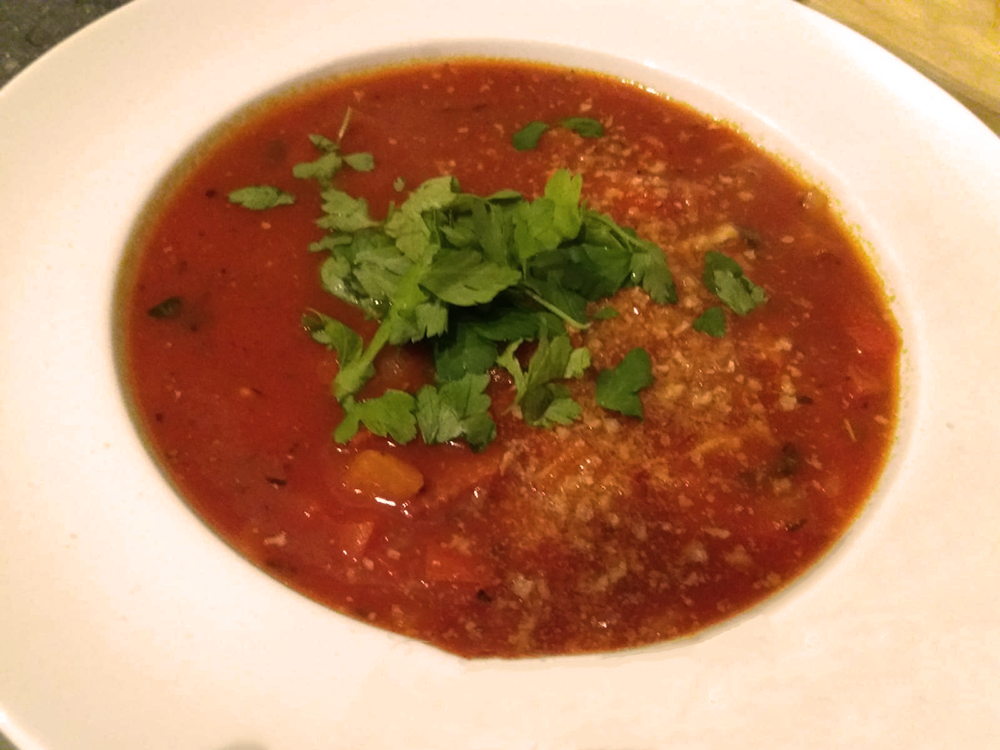

chorizosoep

Bereidingsduur: 45 minuten
Aantal personen: 3
Ingrediënten:
125 gram chorizo worst
1 ui
1 rode paprika
500 gram gezeefde tomaat
enkele takjes peterselie
naar smaak italiaanse kruiden
1 teentje knoflook
2 blokjes groentebouillon
1 theelepel chilipeper
enkele takjes tijm
enkele broodkruimels
125 gram chorizo worst
1 ui
1 rode paprika
500 gram gezeefde tomaat
enkele takjes peterselie
naar smaak italiaanse kruiden
1 teentje knoflook
2 blokjes groentebouillon
1 theelepel chilipeper
enkele takjes tijm
enkele broodkruimels
Instructies:
1. Snijd de ui in snippers, de chorizo in halve plakjes en de paprika in blokjes. Pers de knoflook.
2. Verhit olijfolie in een soeppan en doe bovengenoemde ingrediënten hierin. Fruit tot de kleur verandert.
3. Voeg de gezeefde tomaten, bouillonblokjes met water, chilipeper en de tijm toe. Roer en laat de soep 30 minuten op lage temperatuur koken. Haal de tijmtakjes eruit. Voeg naar smaak Italiaanse kruiden toe.
4. Serveer de soep met blaadjes peterselie erbovenop en strooi de broodkruimels er overheen.
1. Snijd de ui in snippers, de chorizo in halve plakjes en de paprika in blokjes. Pers de knoflook.
2. Verhit olijfolie in een soeppan en doe bovengenoemde ingrediënten hierin. Fruit tot de kleur verandert.
3. Voeg de gezeefde tomaten, bouillonblokjes met water, chilipeper en de tijm toe. Roer en laat de soep 30 minuten op lage temperatuur koken. Haal de tijmtakjes eruit. Voeg naar smaak Italiaanse kruiden toe.
4. Serveer de soep met blaadjes peterselie erbovenop en strooi de broodkruimels er overheen.